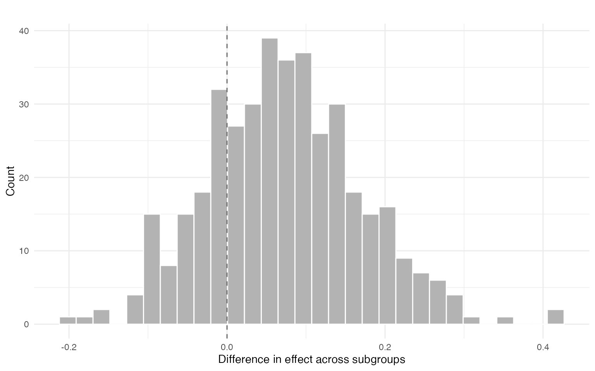
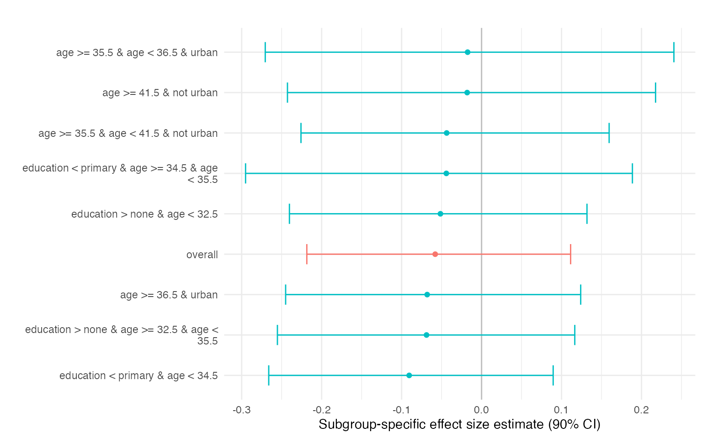

Prince BART with Ordinal Uptake
princeBART authors
2026-03-12
ordinal.RmdOverview
While earlier vignettes focus on binary treatment uptake, many
empirical applications involve treatments that take multiple ordered
values. This vignette illustrates how princeBART can be
used when the treatment is discrete with more than two
levels, using fertility (number of children) as a motivating
example.
We consider a setting in which:
- Z: current infecundity indicator (instrument)
- W: number of children ever born (treatment)
- Y: employment (outcome)
- X: baseline covariates such as age, education, and urban residence
The number of children is a discrete, non-negative variable with a finite range (e.g., 0–8 children in the simulated data below). This differs from the binary uptake case but fits naturally within the Prince BART framework.
For binary uptake, the IV estimand can be interpreted as the average
effect of switching from untreated to treated among compliers. With
multivalued uptake, the instrument can shift treatment by different
magnitudes across units. In princeBART, the primary ordinal
contrast focuses on units with W(0) - W(1) = 1, that is,
units whose treatment is shifted by exactly one unit by the instrument.
In this fertility-style example, the corresponding summary can be
interpreted as the average impact of one additional child on employment
for women in that one-unit-shift principal stratum.
This example is inspired by applications where current infecundity is used as an instrument for fertility and employment is the outcome of interest. See the methodological and empirical application in:
https://arxiv.org/abs/2508.10787
Conceptually, this vignette combines two ideas illustrated separately in earlier vignettes:
-
Detecting treatment effect heterogeneity using
conditional effects among units with a one-unit treatment shift
(
W(0) - W(1) = 1). - Generalizing those conditional effects to a broader population by averaging over a target covariate distribution.
In this example, the target population is defined within the same survey dataset, rather than through a separate external dataset.
Setup
We observe:
- Z: binary instrument
-
W: ordinal treatment taking values
0, 1, ..., J - Y: binary outcome
- X: baseline covariates
Our goal is to estimate conditional effects for one-unit treatment
changes (W(0) - W(1) = 1) and summarize how these effects
vary across values of X.
Identification Assumptions
The analysis relies on standard instrumental-variable assumptions adapted to the multivalued-treatment setting.
Conditional unconfoundedness of the instrument given X After adjusting for observed covariates
X, the instrumentZis assumed independent of the relevant potential outcomes.Exclusion restriction The instrument affects the outcome only through the treatment
W.Monotonicity In this application, infecundity can only weakly reduce fertility, so
W(1) <= W(0)under the coding whereZ = 1indicates infecundity.Additional assumption for multivalued treatments With multivalued treatments, identification additionally requires an assumption about the residual association between
W(0)andW(1)after conditioning on observed covariatesX.
Simulated Example Data
We simulate a dataset inspired by fertility applications where current infecundity affects the number of children ever born, and an additional child may reduce employment in a heterogeneous way.
simulate_ps_ordinal <- function(
n = 1000,
max_w = 8,
seed = 123
) {
set.seed(seed)
age <- pmin(pmax(round(rnorm(n, mean = 29, sd = 8)), 18), 45)
education <- sample(
c("none", "primary", "secondary+"),
size = n,
replace = TRUE,
prob = c(0.25, 0.30, 0.45)
)
urban <- rbinom(n, 1, 0.45)
sexually_active <- rbinom(
n, 1,
plogis(-3 + 0.18 * (age - 18) + 0.5 * urban)
)
educ_num <- c("none" = 0, "primary" = 1, "secondary+" = 2)[education]
pz <- plogis(-6.2 + 0.14 * age + 0.4 * sexually_active - 0.15 * educ_num)
Z <- rbinom(n, 1, pz)
latent_w0 <- -1.5 +
0.18 * (age - 18) +
0.25 * educ_num -
0.15 * urban +
rnorm(n, sd = 1.0)
W0 <- pmax(0, pmin(max_w, round(latent_w0)))
delta <- rbinom(
n, size = 2,
prob = plogis(-1.3 + 0.15 * W0 + 0.02 * (age - 25))
)
W1 <- pmax(0, W0 - delta)
W <- ifelse(Z == 1, W1, W0)
tau_child <- ifelse(
education == "none", -0.2,
ifelse(education == "primary", -0.1, 0.00)
)
eta0 <- -0.7 +
0.10 * educ_num +
0.10 * urban +
0.02 * (age - 25) -
0.0008 * (age - 25)^2
eta_y <- eta0 + tau_child * W
py <- plogis(eta_y)
Y <- rbinom(n, 1, py)
data.frame(
Y = Y,
Z = Z,
W = W,
age = age,
education = ordered(education,
levels = c("none", "primary", "secondary+")
),
urban = urban,
W0_true = W0,
W1_true = W1,
pz_true = pz,
tau_child_true = tau_child
)
}
set.seed(42)
simdata <- simulate_ps_ordinal(n = 1000, seed = 42)
table(simdata$W)
#>
#> 0 1 2 3 4 5 6
#> 483 232 161 82 35 5 2
mean(simdata$Z)
#> [1] 0.161
mean(simdata$Y)
#> [1] 0.383Basic Usage
Formula Interface
princeBART uses a 2SLS-style formula:
Y ~ covariates | Z | W
library(princeBART)
library(future)
plan(multisession, workers = 4)
fit <- prince_BART(
Y ~ education + age + urban | Z | W,
rho = 0,
data = simdata,
n_chains = 2,
n_warmup = 100,
n_samples = 200,
instrument_overlap = c(0.1, 0.9),
keep_trees = TRUE
)
# saveRDS(fit, file = "inst/extdata/fit_ordinal.rds")Extracting Treatment Effects
princeBART summarizes effects among units with a
one-unit instrument-induced treatment shift
(W(0) - W(1) = 1). These summaries average conditional
effects over the empirical covariate distribution.
fit <- readRDS(.extdata("fit_ordinal.rds"))
print(fit)
#> Principal Stratification BART Fit
#> ---------------------------------
#> Chains: 2
#> Iterations: 200
#> Units: 489
#> Trees: saved
#> Uptake model: Ordinal/count uptake
#>
#> Use summary() or coef() to extract contrasts and treatment effects.
summary(fit)
#> Principal Stratification BART Summary (Ordinal Uptake)
#> =====================================================
#>
#> Type and treated_only parameters are currently
#> interpreted in overall contrast computation.
#>
#> Treatment effects among affected units
#> --------------------------------------
#>
#> Mixed ATE among affected units:
#> variable mean median sd mad
#> 1 Mixed ATE among affected units -0.0579832 -0.06083325 0.1048113 0.1106534
#> q5 q95 rhat ess_bulk ess_tail
#> 1 -0.2185254 0.1113679 1.006963 332.8613 333.6813
#>
#> By treatment level affected by the instrument:
#> variable mean median sd mad q5 q95
#> 1 Level 1 -0.06871285 -0.07054415 0.1056774 0.1122572 -0.2394966 0.09790001
#> 2 Level 2 -0.05358876 -0.06182210 0.1114310 0.1167816 -0.2311257 0.14576060
#> 3 Level 3 -0.05825465 -0.06249365 0.1092862 0.1092012 -0.2442998 0.12043494
#> 4 Level > 3 -0.05061844 -0.05196348 0.1162793 0.1061291 -0.2360216 0.13776173
#> rhat ess_bulk ess_tail
#> 1 1.0098474 332.9325 366.2210
#> 2 1.0181819 334.1748 284.2230
#> 3 1.0029092 351.1459 364.5359
#> 4 0.9996747 336.9929 313.1013
#>
#> Levels are shown individually until they cover 80% of affected units;
#> higher levels are pooled.
coef(fit)
#> Mixed ATE among affected units Level 1
#> -0.05798320 -0.06871285
#> Level 2 Level 3
#> -0.05358876 -0.05825465
#> Level > 3
#> -0.05061844Sensitivity to the multivalued-treatment assumption
With multivalued treatments, identification requires an assumption
about the association between the two potential treatment levels
W(0) and W(1). This association is not
identified from observed data because only one of the two potential
treatment values is observed for each individual.
In princeBART, this assumption is governed by
rho, which controls residual dependence in the latent
bivariate uptake model.
-
rho = 0: conditional independence between latentW(0)andW(1)givenX -
rho > 0: units with higher baseline uptake tend to have higher uptake underZ = 1 -
rho < 0: units with higher baseline uptake tend to have lower uptake underZ = 1
Because rho is not empirically identified, varying
rho is a natural sensitivity analysis for ordinal-uptake
conclusions.
Effect Heterogeneity by Segments
We can summarize heterogeneity by fitting a shallow regression tree to the posterior mean conditional effects.
res <- segment_heterogeneity(
fit,
min_compliers_bucket = 2,
plot = TRUE,
contrast = TRUE
)
res$contrast$summary
#> mean sd ci_lower ci_upper p_gt0
#> 1 0.07251548 0.09698965 -0.08800669 0.2385291 0.7625
res$plot$diff
The segment summaries correspond to subgroup-specific averages of conditional effects. Differences across segments highlight interpretable heterogeneity in treatment effects.
res$effects
#> segment mean sd ci_lower ci_upper
#> overall -0.0580 0.105 -0.219 0.1114
#> education < primary & age < 34.5 -0.0905 0.107 -0.266 0.0895
#> education < primary & age >= 34.5 & age < 35.5 -0.0441 0.149 -0.295 0.1886
#> education > none & age >= 32.5 & age < 35.5 -0.0689 0.110 -0.255 0.1166
#> education > none & age < 32.5 -0.0514 0.113 -0.240 0.1318
#> age >= 36.5 & urban -0.0680 0.113 -0.245 0.1240
#> age >= 35.5 & age < 36.5 & urban -0.0175 0.153 -0.271 0.2405
#> age >= 35.5 & age < 41.5 & not urban -0.0437 0.120 -0.226 0.1595
#> age >= 41.5 & not urban -0.0180 0.137 -0.243 0.2176
#> p_gt0 n n_group
#> 0.318 489 123.99
#> 0.203 68 16.57
#> 0.399 15 4.20
#> 0.275 87 21.03
#> 0.355 115 24.08
#> 0.258 80 23.39
#> 0.430 17 4.74
#> 0.352 81 22.37
#> 0.463 26 7.61
res$plot$effect
## Generalizing to a Broader PopulationIn earlier vignettes, generalization relied on a separate external dataset containing the covariate distribution of the target population. Here we illustrate a related setting where the target population is defined within the same dataset.
Generalizing treatment effects requires that the conditional effects estimated in the instrument-identified subgroup are valid for the target population once we average over the target covariate distribution. This relies on two conditions: (i) conditional transportability, meaning that after adjusting for the observed covariates (X), the conditional treatment effects do not differ systematically between the estimation sample and the target population; and (ii) adequate overlap in the covariate distributions so that the values of (X) observed in the target population are represented in the estimation sample.
Diagnostics and practical guidance for assessing these conditions are discussed in the Generalization with princeBART vignette.
In this example, the target population is defined using a
subpopulation indicator within the same dataset. The generalization step
then averages the conditional effects estimated by
princeBART over the covariate distribution of that target
group.
n <- nrow(simdata)
# Survey design: 100 PSUs with varying sizes
simdata$psu <- sample(1:100, n, replace = TRUE)
# Survey weights
simdata$weight <- runif(n, 0.5, 2)
# Define a target subpopulation (e.g., adults under 60)
simdata$eligible <- simdata$age < 60
# Generalize treatment effects to the target population
pate_result <- general_BART(
princebart_fit = fit,
newdata = simdata,
subpop = simdata$eligible, # Target subpopulation
psu = simdata$psu, # PSU for survey inference
weights = simdata$weight, # Survey weights
n_cores = 4,
verbose = TRUE
)
#> Computing propensity on common covariates...
#> Step 1: Imputing missing covariates...
#> Step 2: Expanding instrument propensity...
#> Step 3: Predicting potential outcomes...
#> Warning: package ‘future’ was built under R version 4.4.3
#> Warning: package ‘future’ was built under R version 4.4.3
#> Warning: package ‘future’ was built under R version 4.4.3
#> Warning: package ‘future’ was built under R version 4.4.3
#> Step 4: Computing PATE...
#> Done.
# View results
print(pate_result)
#> General BART PATE Estimate
#> ==========================
#> PATE: -0.0356
#> 95% CI: [-0.2105, 0.1923]
#> SD: 0.131
#> N (subpop): 1000
#>
#> Use general_BART_overlap() for overlap analysis
#> Use general_BART_transportability() for sensitivity analysis